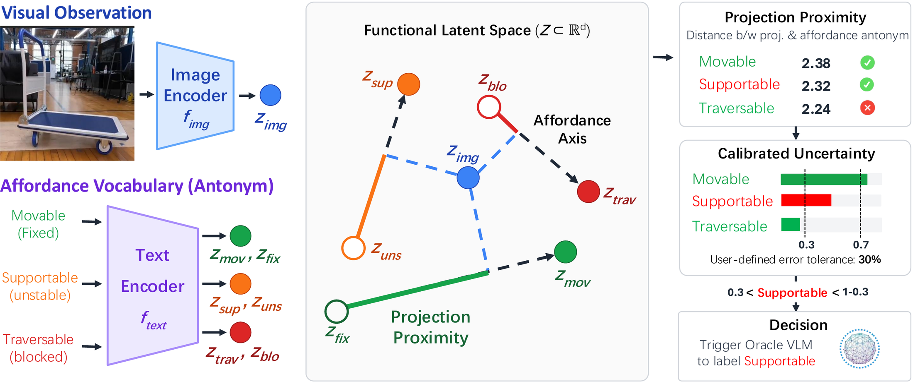
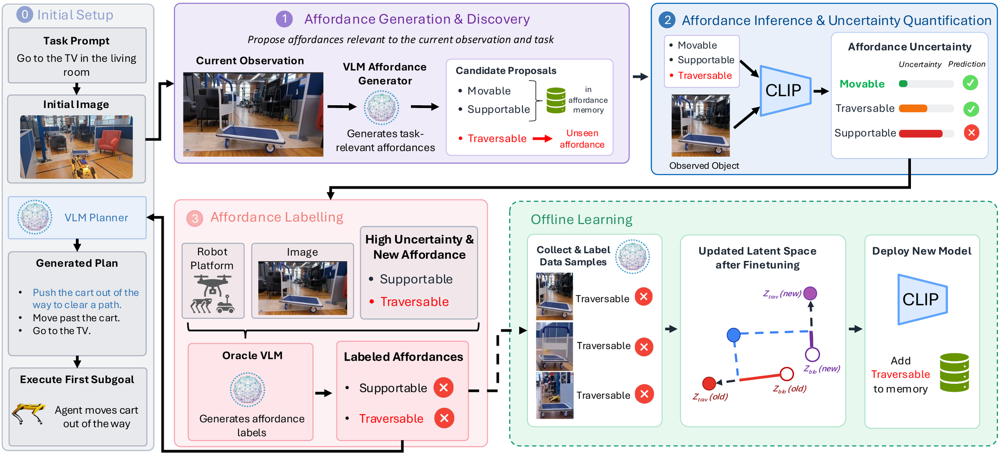
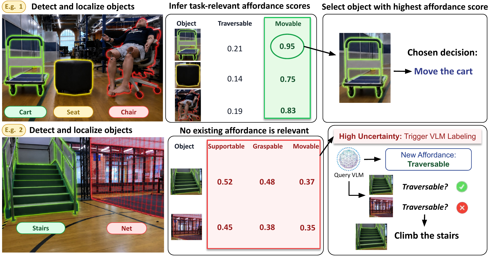
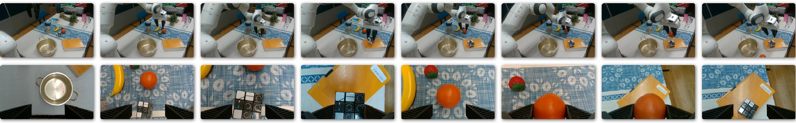

Existing robot planning systems rely on appearance-based reasoning, where visual observations are encoded into latent spaces organized around object appearances (e.g., recognizing a "cart" based on how it looks). However, planning requires reasoning about task-relevant functionalities of objects (e.g., whether an object is "movable"), which appearance-based latent spaces do not capture. As a result, existing approaches struggle to generalize to novel robot-object interactions.
We address this limited generalizability through affordance reasoning, enabling planning based on task-relevant object functionalities instead of appearance alone. We introduce A4D, which maps visual observations into a shared latent space structured around affordances (e.g., "movable"). By projecting visual observations into this functional latent space and measuring their proximity to affordances, A4D infers functionalities relevant to the observed object.
Furthermore, we introduce an affordance discovery mechanism that expands the latent space to handle unseen scenarios where existing affordances are insufficient. A4D uses proximity in the functional latent space to quantify uncertainty in affordance inference and selectively triggers affordance discovery. We evaluate A4D across several planning tasks involving diverse and unseen affordances. A4D achieves 94% inference accuracy on existing affordances outperforming state-of-the-art approaches by over 15% points, improves new-affordance inference accuracy from 70% to over 90% with fewer than 10% of the original training data, and enables 100x faster inference.

Functional Latent Space for Affordance Reasoning. A4D maps visual observations and affordance descriptions into a shared functional latent space. For each affordance, we construct an affordance axis between an affordance and its antonym (e.g., movable ↔ fixed). Visual observations are projected onto these axes to infer task-relevant object functionalities. Projection proximity is calibrated into uncertainty estimates, enabling the system to identify when additional reasoning is required.

Uncertainty-Aware Affordance Discovery. Given a task and visual observation, A4D first generates candidate affordances relevant to the current planning problem. Affordance inference is performed in the functional latent space, while calibrated uncertainty determines whether existing affordances are sufficient. When uncertainty is high or a new functionality is required, a vision-language model proposes and labels new affordances, which are incorporated through offline learning and added to the affordance memory for future deployment.

A4D performs affordance-based decision making across diverse scenarios. In the first example, the planner selects the cart as the most movable object for the task. In the second example, existing affordances are insufficient, triggering uncertainty-guided affordance discovery and introducing a new traversable affordance to successfully complete the task.

A4D transfers across robot platforms and domains. The same affordance generation, inference, and discovery framework is deployed on a tabletop robot arm, demonstrating that affordance reasoning is not tied to a specific robot platform. By conditioning generation and labeling on platform-specific capabilities, A4D adapts affordance predictions to new robots and tasks without modifying the underlying framework.
@inproceedings{siva2026objectsenablearefunctional,
title={What Objects Enable, Not What They Are: Functional Latent Spaces for Affordance Reasoning},
author={Rohan Siva and Neel P. Bhatt and Yunhao Yang and Seoyoung Lee and Nishant Gadde and Christian Ellis and Alvaro Velasquez and Zhangyang Wang and Ufuk Topcu},
year={2026},
booktitle={Proceedings of the Tenth Conference on Robot Learning},
address={Austin, TX, USA},
publisher={PMLR},
}